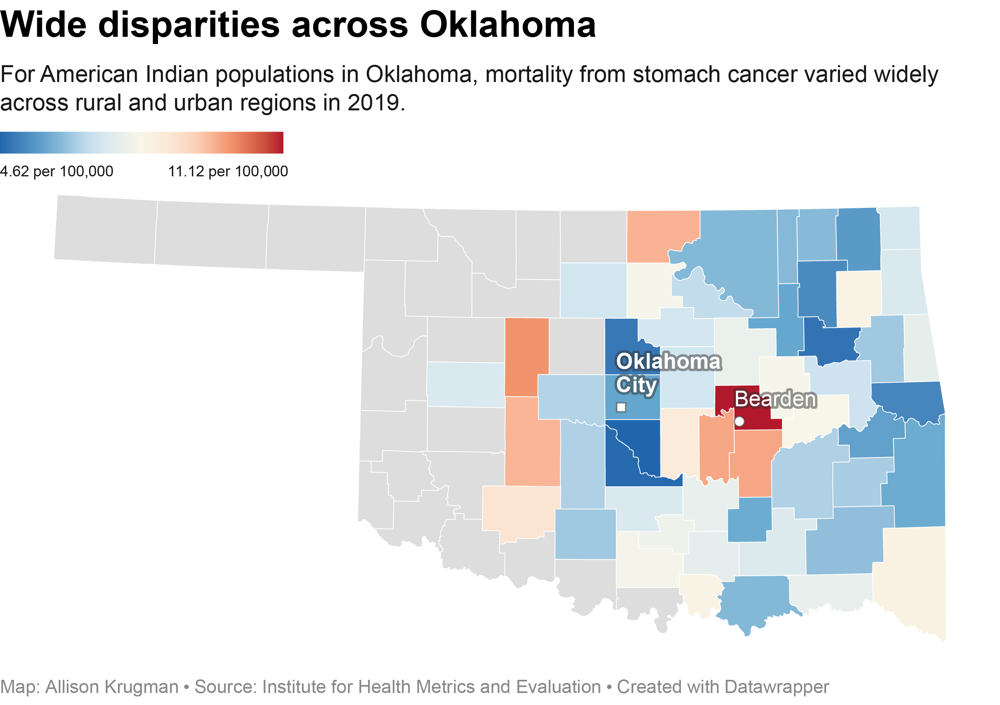

December 22, 2023
This page contains two visualizations of IHME’s dataset “United States Stomach Cancer Mortality Rates by County, Race, and Ethnicity 2000-2019.” I chose the dataset because it provided an interesting angle for a possible Think Global Health story: on the surface, mortality from stomach cancer has declined in the U.S., but for American Indians and Alaska Natives (AIAN), rates remain relatively steady. This anomaly could be attributed to food deserts, environmental factors and lack of access to health care. Smoking is also a factor, and American Indian and Alaska Native adults have the highest smoking rate in the U.S. I chose to focus on Oklahoma as the state with the second-largest AIAN population and the greatest disparities in stomach cancer deaths between counties.
This line graph visualizes state-level trends in stomach cancer mortality rates among racial and ethnic groups in Oklahoma. In 2004, AIAN, Black and Asian/Pacific Islander groups saw a bump in stomach cancer following an outbreak of tornadoes in Oklahoma, the largest continuous tornado outbreak ever recorded in the state in the month of May. The tornadoes damaged Oklahoma’s crops and infrastructure, possibly leading to an increase in consumption of processed foods or contamination of water sources. AIAN populations experienced the greatest increase during this period, and lowest percent change in cancer deaths overall.
To create the graph, I combined all 20 datasets (years 2000-2019) from IHME using Python’s data analysis library Pandas. I then isolated state-level, age-adjusted data for each ethnic group. Finally, I pivoted my DataFrame for easy visualization in DataWrapper. The resulting graph is interactive, allowing the user to explore the data further while highlighting the AIAN trend.

This map uses county-level figures from 2019 to shows geographic disparities in stomach cancer deaths within the state of Oklahoma. I chose to label Oklahoma City, the state’s capital and its largest city, as well as Bearden, a rural town in Okfuskee county, to show the difference in cancer deaths between these two environments.
To create the graph, I isolated county-level, age-adjusted data for the AIAN population in the IHME’s 2019 dataset. I again used DataWrapper, and imported it into Illustrator to make the legend names more readable (4.62 per 100,000 rather than .0000462). With more time, I would create a time slider to toggle through multiple years of data and observe the change.